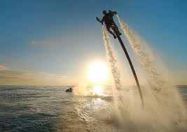
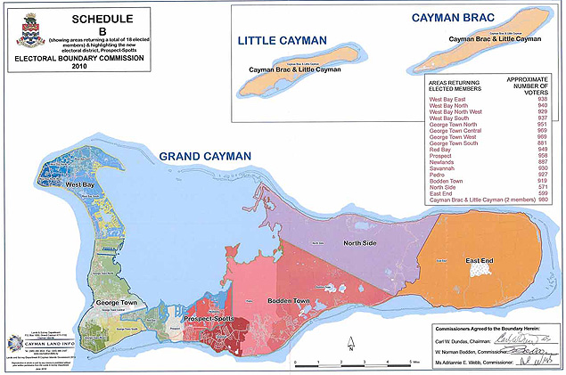
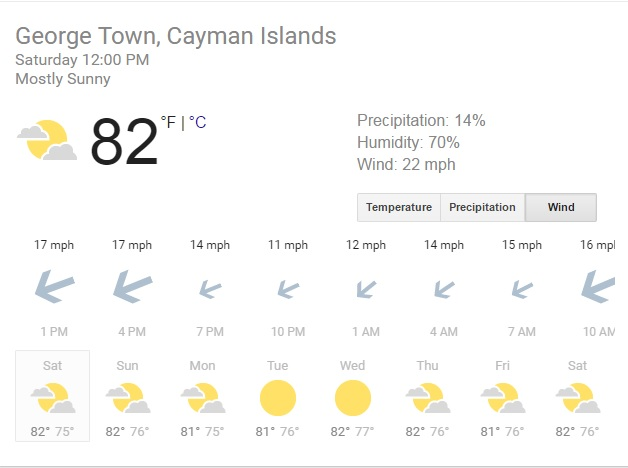

Overview of Weather and the Districts in Grand Cayman
Home
What to do in seven mile beach
What to do in north side
Welcome to our site that gives you water sports adventurers a quick reference guide to the weather in Grand Cayman and what to do in each district
Any type of water sport you are into, we have it listed

Districts map - where to go on island

Weather conditions
